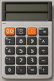
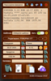
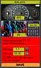

Моля, изберете:

CX-Calc

CX-Extractor

CX-Consumption
⚙️
Настройки на цветовете
Фон на страницата
Фон на панела
Фон на CX-Calc
Фон на CX-Extractor
Фон на CX-Consumption
Текст на CX-Calc
Текст на CX-Extractor
Текст на CX-Consumption
Цвят на заглавие
Цвят на текст
Импорт / Експорт на настройки
↑
↓
Нулирай
Затвори